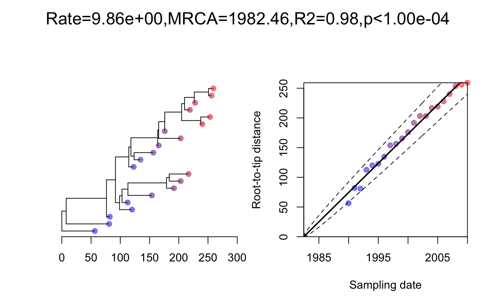
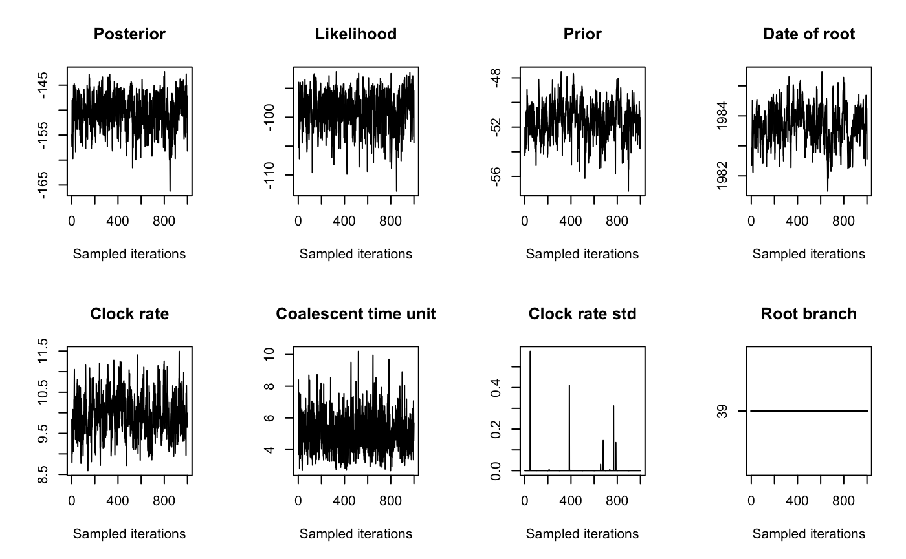
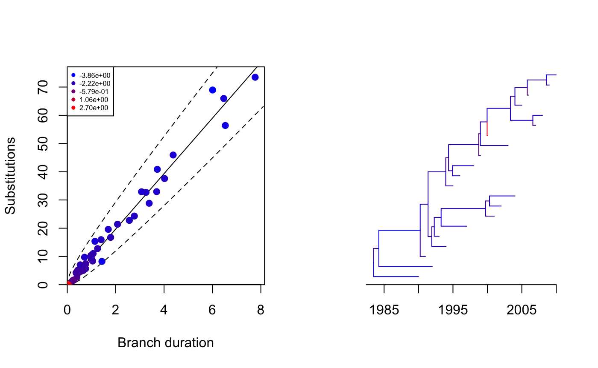
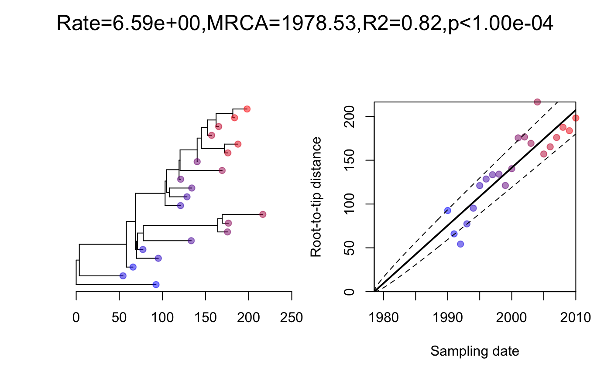

vignettes/exampleRelaxed.Rmd
exampleRelaxed.RmdWe start by generating a coalescent tree with 10 leaves sampled at regular intervals between 1990 and 2010, and a coalescent time unit of 5 years:
On each branch we observe a number of substitutions which is distributed \(\mathrm{Gamma}(rl,1)\) where \(l\) is the branch length and \(r=10\) per year is the substitution rate. We can simulate an observed phylogenetic tree and perform a root-to-tip analysis as follows:

We run the dating analysis as follows:

## [1] 0.993Let’s see how each branch contributes to the overall likelihood:

Let’s start again with a new dataset generated using the relaxed clock model:
